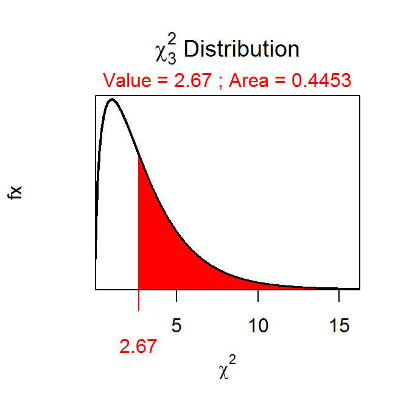
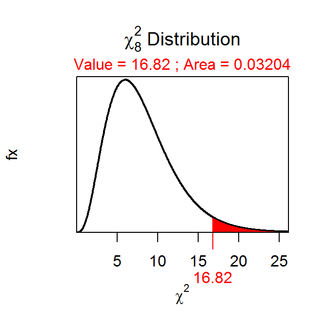

library(NCStats)An example of computing the p-value \(\chi^{2}\)=2.67 and df=3.
( distrib(2.67,distrib="chisq",df=3,lower.tail=FALSE) )
## [1] 0.4453496An example of computing the p-value if \(\chi^{2}\)=16.82 and df=8.
( distrib(16.82,distrib="chisq",df=8,lower.tail=FALSE) )
## [1] 0.03203895